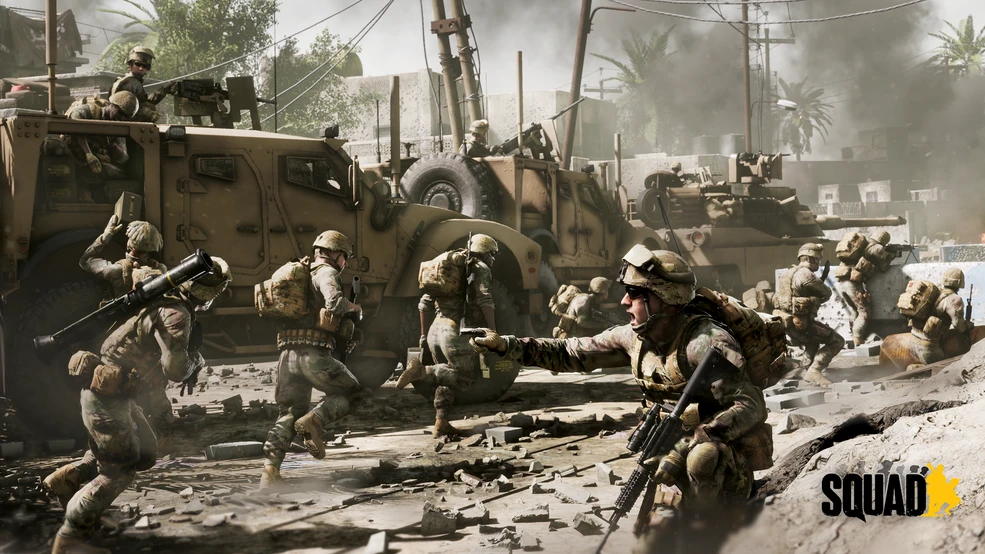
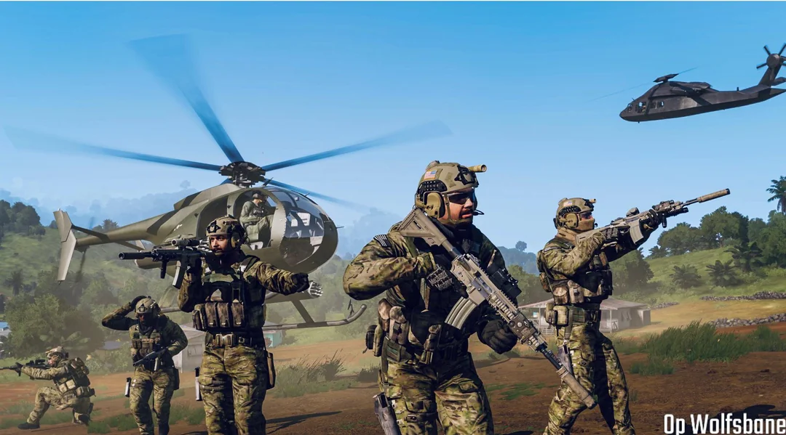
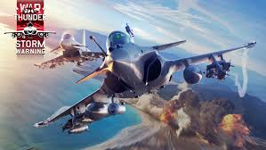

Sobre mi
Soy un chico que me gusta experimentar y probar cosas nuevas, es por ello que estoy haciendo una FP Superior de programacion e informatica, ya que me parece de lo mas entretenido que hay, ademas me servira para opositar a un futuro. Actualmente estoy super corto de tiempo, de normal entreno 2-3h al dia lucha y MMA. Por otro lado estoy estudiando como bien sabeis el FP Superior y ademas trabajando 25 horas de repartidor en Burguer King, asi que no tengo casi tiempo para mi y me intento esforzar lo que puedo sin llegar a mi limite
Videojuegos
Soy un pedazo de friki, es lo que hay. Por mucho que no lo parezca llevo en el teclado desde los 10 años practicamente desde mi primer juego "En serio". Ya sabes, cuando le hechas mas de 3-4 horas al dia, Battlefront 2015...Vaya tiempos.
En fin, desde entonces he estado jugando todo tipo de juegos desde MMORPGs como Albion Online, pero sobre todo Shooters como CS:GO, Rust, Battlefront.
Ademas otro tipos de juegos como simuladores belicos, que actualmente son mis favoritos juegos como HOI4, War thunder, Hell let loose, Squad (Una joya si te gustan estos juegos)
|

Squad
|

Arma III
|

War thunder
|
Temas Belicos e Historia
Soy una persona que le apasiona el tema militar y la historia, sobre todo en cuanto a vehiculos blindados. Siempre desde pequeño desde que tenia 12 años estaba siempre jugando a juegos de esta indole y me han hecho aprender tanto sobre este tema que me considero todo un experto. Ademas siempre me gusta estar informado y actualizado y es por ello que siempre estoy enterado de todos estos temas al orden del dia